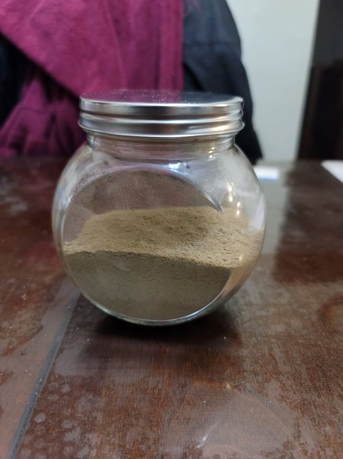

Wild Rice Flour

Ingredients:
Instructions:
- Place the wild rice into a food processor and blend until small beads.
- Transfer from the food processor into a coffee grinder and grind until a fine powder.
- Sift the flour through a sieve to filter out any missed larger pieces. Place the larger pieces back into the coffee grinder and repeat until a fine powder.